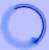
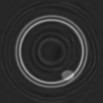

Main Menu
Home
Software
1D Deconvolution
2D Deconvolution
3D Deconvolution
About us
External links
Results with 3D Volumes
Optical sectioning microscopy is the process of getting thin optical sections through a thick specimen on a microscope by abrogating the effects of out-of-focus light coming from different depth planes in the specimen. This may be achieved by optomechanical (e.g. confocal microscopy) or computational (e.g. deconvolution microscopy) means. Optical sectioning in fluorescence microscopy is a well-established subject and most of the commercial microscopy deconvolution software currently available is geared towards this process. However it is hard to find any examples of software designed for brightfield microscopy that do not involve blind deconvolution. The main reason for this is that brightfield microscopy is a more complex imaging model than fluorescence and it is particularly difficult to measure the brightfield PSF (hence the use of blind methods for this modality). However, using recent developments in the field (see J Microsc. 2010 Feb;237(2):192-9.), I have modified non-blind deconvolution to be useful for optical sectioning of brightfield microscopy and the programs needed to do this are uniquely included in the free software distribution available via this website.
Above is illustrated the deconvolution of a synthetic 3D dark-field test object which you can download via this website as one of the demo packages. The test object is a bilayered vesicle with the inner layer of the vesicle being brighter than the outer layer and with an ovoid solid 'bead' object overlapping the inner layer and resting on the outer layer. In addition, the background to this object is not completely black but is a shade of grey. The PSF is not illustrated but it is an asymmetrical small object which is shaped like a ping-pong ball with a dent in it. Intensities in these figures have been gamma adjusted for display purposes. The top figure shows a 2D XY slice through the 3D volume: left is the original object, middle is the blurred object, right is the deconvolution result showing good recovery of details with only minor ringing seen at the inner periphery of the 'bead'. The lower figure shows a 3D rendering in pseudocolour of this same object (using FATCAM) where the volume is actually a composite of the blurred object (bottom and left part of the volume) spliced to the deconvolved object (top and right part of the volume): left is a full-face XY view, middle and right are two different angles (part of the vesicle has been removed for clarity of visualisation, in reality this is a completely closed structure).  |
|
Home | Contact Us | Disclaimer |